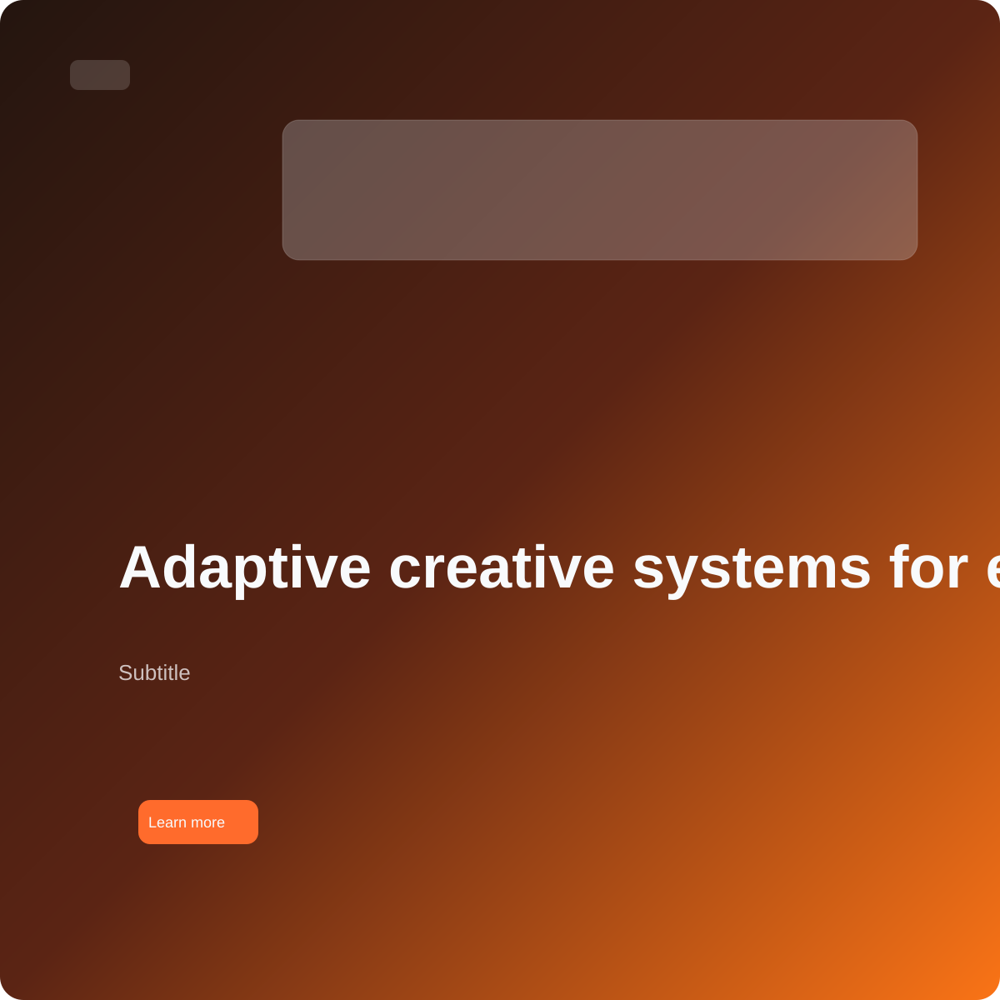

marketplace-card-no-image
Manual label: good / acceptable / poor
Structural: valid | 31
Visual: 44 | poor
Warnings: Visual mass collapses into one corner. | Composition lacks counterweight. | Image presence is too weak to support the message. | Text-image ratio feels weak. | Image feels compositionally detached from the message. | CTA feels underweighted.
Strengths: Image carries a clear primary focal role. | Negative space feels intentional rather than abandoned.
Axes: focus 82, balance 17, harmony 0, cta 51, space 74, coherence 45